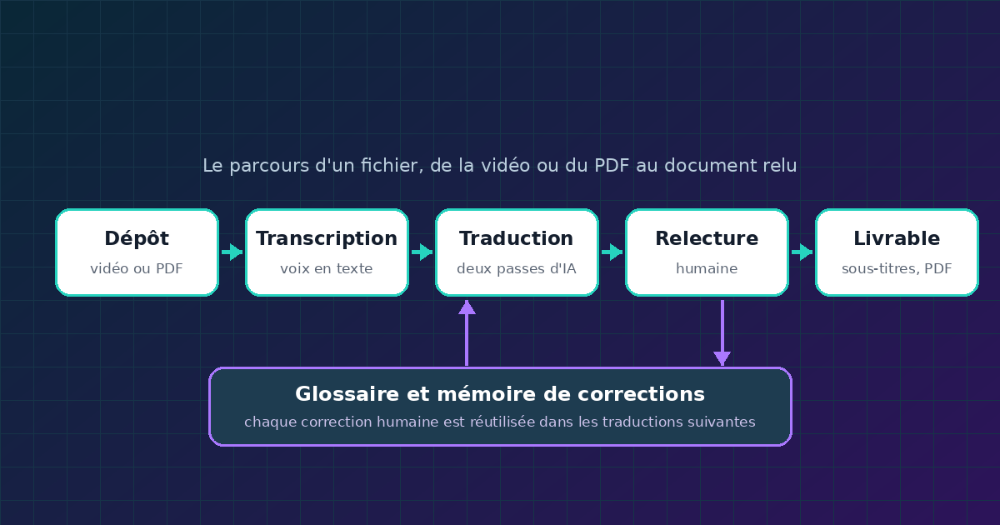
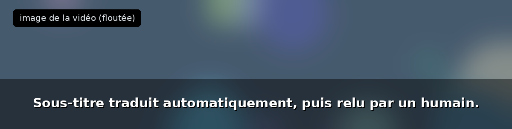
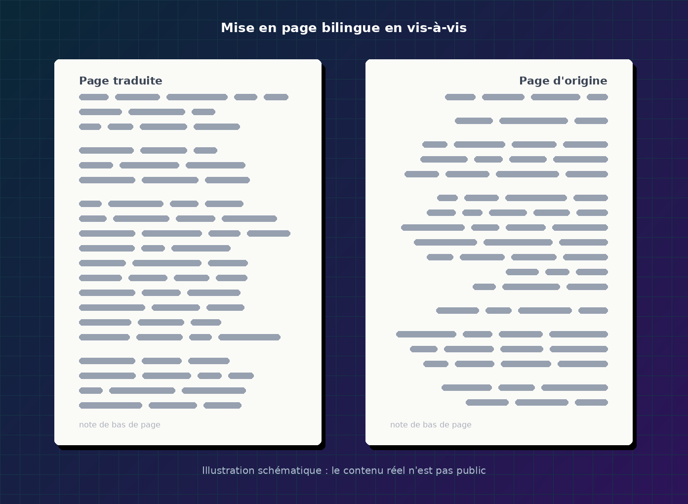

Transcrire des vidéos et traduire des documents, sans y passer ses soirées
Une petite organisation recevait des heures de vidéos et des centaines de pages en langue étrangère. Chaque fichier demandait des heures de transcription et de traduction à la main, et les outils grand public ne tenaient pas la cohérence du vocabulaire d'une page à l'autre. J'ai construit un outil qui fait le travail mécanique tout seul, la nuit, et qui retient chaque correction humaine pour faire mieux la fois suivante.
Traduire n'est pas le plus dur. Rester cohérent, si.
Demander à une IA de traduire un paragraphe est facile et presque gratuit. Le vrai besoin était ailleurs, et il tient en trois points que les outils tout faits ne règlent pas :
Le vocabulaire qui dérive
Sur 200 pages, un même terme métier traduit de quatre façons différentes rend le document inutilisable. Aucun outil grand public ne garantit qu'un mot sera rendu de la même manière du début à la fin.
Des documents compliqués
Des PDF en partie scannés, des notes de bas de page, deux langues qui ne s'écrivent pas dans le même sens. Il fallait lire tout cela correctement, puis reproduire une mise en page propre avec l'original et la traduction côte à côte.
Le coût
Traiter des heures de vidéo et des centaines de pages uniquement avec des services payants n'était pas tenable pour une petite structure. Le gros du calcul devait tourner sur une machine déjà possédée.
Le parti pris
L'outil ne remplace pas la personne qui relit : il fait le travail répétitif et garantit la cohérence, l'humain valide. Chaque correction humaine est conservée et réutilisée dans les traductions suivantes. C'est le cœur du projet, et c'est ce qui le rend transposable à n'importe quel métier qui a son propre vocabulaire : immobilier, juridique, médical, technique.
On dépose un fichier, on reçoit un résultat relu
Du point de vue de l'équipe, l'outil tient en quelques gestes. Tout le reste se passe en coulisses.
-
Déposer
Depuis un simple navigateur, on envoie une vidéo ou un PDF sur un espace privé. Rien à installer, un compte personnel suffit.
-
Laisser travailler
L'outil met le fichier en file d'attente et le traite quand une machine est libre, généralement la nuit. Il transcrit la voix en texte, traduit en deux passes (un premier jet rapide, puis une relecture par un modèle plus fort qui corrige le vocabulaire et le style), puis prépare la mise en page. Si la machine s'éteint au milieu, il reprend là où il s'était arrêté.
-
Relire et valider
Un e-mail prévient quand c'est prêt. Un relecteur ouvre une interface simple, corrige ce qui doit l'être, valide. Les corrections sont enregistrées : l'outil ne refera pas deux fois la même erreur.
-
Récupérer le livrable
Pour une vidéo : des sous-titres incrustés dans l'image, avec une version verticale pour les formats courts. Pour un document : un PDF bilingue, page d'origine et page traduite en vis-à-vis, notes de bas de page comprises.

Ce que l'équipe récupère


Un glossaire et une mémoire qui s'améliorent à l'usage
C'est ce qui distingue ce projet d'un simple appel à un traducteur automatique. Deux choses s'accumulent au fil des mois et sont réutilisées à chaque traduction :
- Le glossaire : les termes du métier avec la traduction retenue par l'équipe. Depuis l'écran de relecture, annoter un mot suffit à l'ajouter. Personne ne tient de tableur à côté.
- La mémoire de corrections : des milliers d'exemples « ce que l'IA avait proposé, ce que l'humain a retenu ». Montrer les deux versions à l'IA lui apprend la différence, bien mieux que de lui donner une liste de règles.
Les bons exemples, pas les derniers
Pour chaque passage, l'outil choisit dans la mémoire les corrections qui parlent du même sujet, plutôt que les dix plus récentes. Le glossaire est filtré de la même façon : seuls les termes réellement présents dans le texte sont envoyés.
Une mémoire qu'on ne perd pas
Des mois de corrections, c'est un actif. Les fichiers sont écrits de manière à survivre à une coupure, et un fichier abîmé n'est jamais écrasé : les nouvelles corrections sont mises de côté en attendant une vérification.
L'humain garde la main
Un conflit entre deux traductions d'un même terme est signalé, pas tranché en silence. L'outil propose, l'équipe décide, et la décision est retenue.
Un outil que des non-techniciens utilisent sans moi
L'outil travaille la nuit, pour des personnes qui ne regardent pas d'écran de contrôle. Un échec silencieux coûte une journée ; un faux « c'est prêt » coûte la confiance. La plus grande partie du travail est allée là.
Il reprend où il s'est arrêté
Coupure de courant, machine éteinte, quota d'un service atteint en plein milieu d'un document : le travail déjà fait n'est jamais refait ni repayé. Un document interrompu à la page 180 repart de la page 180.
Il distingue ses pannes
Un mot de passe invalide, une limite d'usage et un serveur momentanément saturé ne se traitent pas pareil : arrêt immédiat avec un message clair, mise en attente et reprise automatique, ou nouvel essai un peu plus tard.
Il se contrôle lui-même
Chaque vidéo reçoit un rapport de qualité (minutes manquantes, passages douteux), chaque page une note. L'outil refuse d'annoncer un succès s'il n'a rien à livrer. Mieux vaut un « à vérifier » honnête qu'un résultat vide.
Et l'adoption ?
Un outil que l'équipe n'utilise pas ne fait gagner aucune heure. Celui-ci a été conçu autour de trois gestes simples (déposer, relire, récupérer), avec un e-mail à chaque étape et aucune installation. Les retours des utilisateurs ont dicté l'ordre des améliorations, pas la liste des fonctions possibles.
Sous le capot, en quelques lignes
Un petit serveur, allumé en permanence, héberge le site de dépôt, la file d'attente et les fichiers. Le calcul lourd se fait sur un ordinateur de bureau qui vient chercher du travail la nuit. Les deux se parlent par une API.
| Domaine | Choix |
|---|---|
| Application | Python, FastAPI, interface web de dépôt et de relecture |
| Intelligence artificielle | Reconnaissance vocale (Whisper), un modèle de langage local pour le premier jet, Claude par API pour la passe de correction |
| Documents et vidéo | Lecture de PDF et de pages scannées (OCR), génération de PDF, ffmpeg pour les sous-titres |
| Exploitation | Linux, services systemd, HTTPS automatique, comptes personnels, sauvegarde quotidienne chiffrée et vérifiée, procédure de reconstruction documentée (déjà utilisée pour de vrai) |
| Qualité | Environ 11 900 lignes de Python versionnées, 310 fonctions de test automatisées |
Ce que j'en retire
Le plus intéressant n'a pas été de brancher des modèles d'IA, mais de construire ce qui les entoure : une file d'attente qui supporte une machine absente, une mémoire qui ne s'efface pas, des contrôles qui disent quand ne pas faire confiance au résultat, et une interface que des non-techniciens utilisent seuls.
Rien de tout cela n'est propre au domaine traité. Le même schéma (une tâche répétitive confiée à l'IA, un humain qui valide, une mémoire qui apprend des validations) s'applique tel quel à des comptes rendus de réunion, des dossiers clients, des annonces à rédiger ou des documents à classer. La valeur n'est pas dans l'IA, elle est dans la boucle qui l'entoure.
Le projet reste un outil interne : le code n'est pas public et l'accès est réservé à ses utilisateurs. Je peux en revanche le montrer en fonctionnement et détailler ses choix lors d'un entretien.
Envie d'en discuter ?
Vous avez une tâche répétitive qui mériterait le même traitement ? Je peux détailler n'importe quelle partie de ce système, et réfléchir avec vous à ce qui s'automatise chez vous.